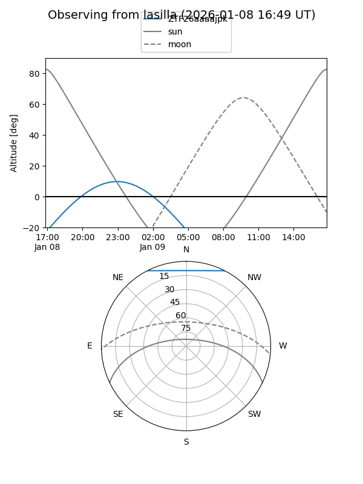
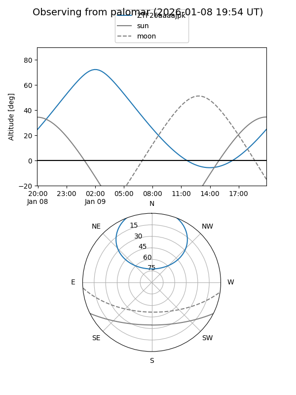

ZTF26aaaajpk
Target ZTF26aaaajpk at 2026-01-09 04:15
Aliases and brokers:
FINK:
Lasair:
ALeRCE:
alt names
ZTF26aaaajpk (ztf,fink_ztf)
Coordinates:
equatorial (ra, dec) = 21.4856,+50.79721
equatorial (HMS+DMS) = 01:25:56.55,+50:47:49.96
galactic (l, b) = (128.4876,-11.70195)
Flags:
Photometry:
last ztfg=18.84
1 ztfg detections
Lightcurve

Visibility


Additional plots